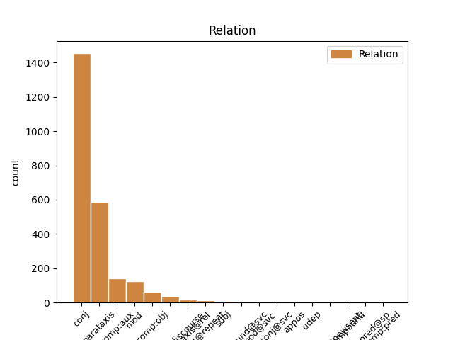
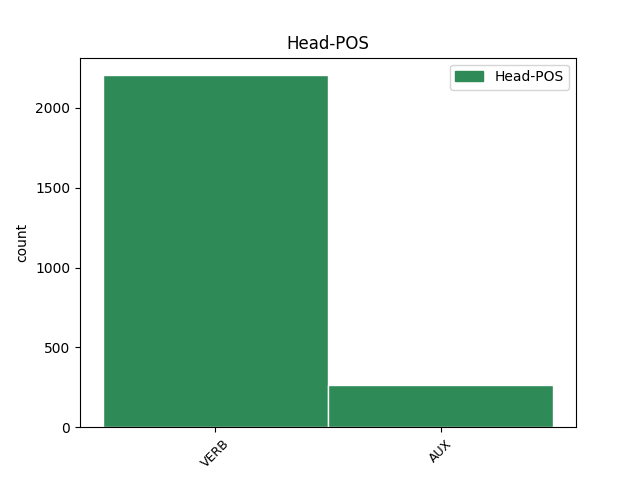
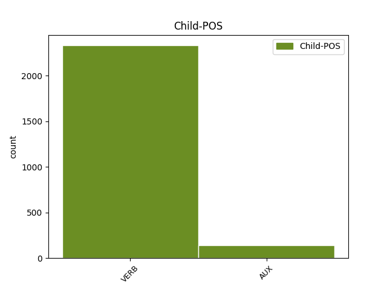

Distribution of features within this leaf



Agreement Rules sorted by frequency.
- When the dependent token is the conjunct(conj) of the head token, and the dependent token is VERB.
1 Під _ _ _ _ 0 _ _ _
2 час _ _ _ _ 0 _ _ _
3 показу _ _ _ _ 0 _ _ _
4 у _ _ _ _ 0 _ _ _
5 США _ _ _ _ 0 _ _ _
6 , _ _ _ _ 0 _ _ _
7 що _ _ _ _ 0 _ _ _
8 розпочався _ _ _ _ 0 _ _ _
9 18 _ _ _ _ 0 _ _ _
10 вересня _ _ _ _ 0 _ _ _
11 2015 _ _ _ _ 0 _ _ _
12 року _ _ _ _ 0 _ _ _
13 , _ _ _ _ 0 _ _ _
14 протягом _ _ _ _ 0 _ _ _
15 першого _ _ _ _ 0 _ _ _
16 тижня _ _ _ _ 0 _ _ _
17 фільм _ _ _ _ 0 _ _ _
18 був бути AUX Vapis-sm Aspect=Imp|Gender=Masc|Mood=Ind|Number=Sing|Tense=Past|VerbForm=Fin 0 _ _ _
19 показаний _ _ _ _ 0 _ _ _
20 у _ _ _ _ 0 _ _ _
21 545 _ _ _ _ 0 _ _ _
22 кінотеатрах _ _ _ _ 0 _ _ _
23 і _ _ _ _ 0 _ _ _
24 зібрав зібрати VERB Vmeis-sm Aspect=Perf|Gender=Masc|Mood=Ind|Number=Sing|Tense=Past|VerbForm=Fin 18 conj _ Id=39r9|LTranslit=zibraty|Translit=zibrav
25 7 222 035 _ _ _ _ 0 _ _ _
26 $ _ _ _ _ 0 _ _ _
27 , _ _ _ _ 0 _ _ _
28 що _ _ _ _ 0 _ _ _
29 на _ _ _ _ 0 _ _ _
30 той _ _ _ _ 0 _ _ _
31 час _ _ _ _ 0 _ _ _
32 дозволило _ _ _ _ 0 _ _ _
33 йому _ _ _ _ 0 _ _ _
34 зайняти _ _ _ _ 0 _ _ _
35 5 _ _ _ _ 0 _ _ _
36 місце _ _ _ _ 0 _ _ _
37 серед _ _ _ _ 0 _ _ _
38 усіх _ _ _ _ 0 _ _ _
39 прем'єр _ _ _ _ 0 _ _ _
40 . _ _ _ _ 0 _ _ _
1 — _ _ _ _ 0 _ _ _
2 Зараз _ _ _ _ 0 _ _ _
3 буде бути VERB Vapif3s Aspect=Imp|Mood=Ind|Number=Sing|Person=3|Tense=Fut|VerbForm=Fin 0 _ _ _
4 біда _ _ _ _ 0 _ _ _
5 , _ _ _ _ 0 _ _ _
6 — _ _ _ _ 0 _ _ _
7 казав казати VERB Vmpis-sm Aspect=Imp|Gender=Masc|Mood=Ind|Number=Sing|Tense=Past|VerbForm=Fin 3 parataxis _ Id=39cl|LTranslit=kazaty|Translit=kazav
8 Микола _ _ _ _ 0 _ _ _
9 Максимові _ _ _ _ 0 _ _ _
10 . _ _ _ _ 0 _ _ _
1 Однак _ _ _ _ 0 _ _ _
2 , _ _ _ _ 0 _ _ _
3 незважаючи _ _ _ _ 0 _ _ _
4 на _ _ _ _ 0 _ _ _
5 судові _ _ _ _ 0 _ _ _
6 справи _ _ _ _ 0 _ _ _
7 і _ _ _ _ 0 _ _ _
8 протести _ _ _ _ 0 _ _ _
9 громадськості _ _ _ _ 0 _ _ _
10 , _ _ _ _ 0 _ _ _
11 дельфінарій _ _ _ _ 0 _ _ _
12 " _ _ _ _ 0 _ _ _
13 НЕМО _ _ _ _ 0 _ _ _
14 " _ _ _ _ 0 _ _ _
15 не _ _ _ _ 0 _ _ _
16 збирається збиратися VERB Vmpip3s Aspect=Imp|Mood=Ind|Number=Sing|Person=3|Tense=Pres|VerbForm=Fin 0 _ _ _
17 втрачати _ _ _ _ 0 _ _ _
18 " _ _ _ _ 0 _ _ _
19 годівницю _ _ _ _ 0 _ _ _
20 " _ _ _ _ 0 _ _ _
21 , _ _ _ _ 0 _ _ _
22 тому _ _ _ _ 0 _ _ _
23 почав почати VERB Vmeis-sm Aspect=Perf|Gender=Masc|Mood=Ind|Number=Sing|Tense=Past|VerbForm=Fin 16 mod _ Id=390f|LTranslit=počaty|Translit=počav
24 шукати _ _ _ _ 0 _ _ _
25 нове _ _ _ _ 0 _ _ _
26 місце _ _ _ _ 0 _ _ _
27 свого _ _ _ _ 0 _ _ _
28 розташування _ _ _ _ 0 _ _ _
29 . _ _ _ _ 0 _ _ _
1 Показ _ _ _ _ 0 _ _ _
2 в _ _ _ _ 0 _ _ _
3 Україні _ _ _ _ 0 _ _ _
4 тривав _ _ _ _ 0 _ _ _
5 7 _ _ _ _ 0 _ _ _
6 тижнів _ _ _ _ 0 _ _ _
7 і _ _ _ _ 0 _ _ _
8 завершився _ _ _ _ 0 _ _ _
9 8 _ _ _ _ 0 _ _ _
10 листопада _ _ _ _ 0 _ _ _
11 2015 _ _ _ _ 0 _ _ _
12 року _ _ _ _ 0 _ _ _
13 , _ _ _ _ 0 _ _ _
14 за _ _ _ _ 0 _ _ _
15 час _ _ _ _ 0 _ _ _
16 прокату _ _ _ _ 0 _ _ _
17 було бути AUX Vapis-sn Aspect=Imp|Gender=Neut|Mood=Ind|Number=Sing|Tense=Past|VerbForm=Fin 0 _ _ _
18 продано продати VERB Vmeo Aspect=Perf|Mood=Ind|Person=0|VerbForm=Fin 17 comp:aux _ Id=39q7|LTranslit=prodaty|Translit=prodano
19 442 509 _ _ _ _ 0 _ _ _
20 квитків _ _ _ _ 0 _ _ _
21 та _ _ _ _ 0 _ _ _
22 зібрано _ _ _ _ 0 _ _ _
23 29 037 892 _ _ _ _ 0 _ _ _
24 ₴ _ _ _ _ 0 _ _ _
25 , _ _ _ _ 0 _ _ _
26 або _ _ _ _ 0 _ _ _
27 ж _ _ _ _ 0 _ _ _
28 1,357,145 _ _ _ _ 0 _ _ _
29 $ _ _ _ _ 0 _ _ _
30 . _ _ _ _ 0 _ _ _
1 Показ _ _ _ _ 0 _ _ _
2 в _ _ _ _ 0 _ _ _
3 Україні _ _ _ _ 0 _ _ _
4 тривав _ _ _ _ 0 _ _ _
5 7 _ _ _ _ 0 _ _ _
6 тижнів _ _ _ _ 0 _ _ _
7 і _ _ _ _ 0 _ _ _
8 завершився завершитися VERB Vmeis-sm Aspect=Perf|Gender=Masc|Mood=Ind|Number=Sing|Tense=Past|VerbForm=Fin 0 _ _ _
9 8 _ _ _ _ 0 _ _ _
10 листопада _ _ _ _ 0 _ _ _
11 2015 _ _ _ _ 0 _ _ _
12 року _ _ _ _ 0 _ _ _
13 , _ _ _ _ 0 _ _ _
14 за _ _ _ _ 0 _ _ _
15 час _ _ _ _ 0 _ _ _
16 прокату _ _ _ _ 0 _ _ _
17 було бути AUX Vapis-sn Aspect=Imp|Gender=Neut|Mood=Ind|Number=Sing|Tense=Past|VerbForm=Fin 8 parataxis _ Id=39q6|LTranslit=buty|Translit=bulo
18 продано _ _ _ _ 0 _ _ _
19 442 509 _ _ _ _ 0 _ _ _
20 квитків _ _ _ _ 0 _ _ _
21 та _ _ _ _ 0 _ _ _
22 зібрано _ _ _ _ 0 _ _ _
23 29 037 892 _ _ _ _ 0 _ _ _
24 ₴ _ _ _ _ 0 _ _ _
25 , _ _ _ _ 0 _ _ _
26 або _ _ _ _ 0 _ _ _
27 ж _ _ _ _ 0 _ _ _
28 1,357,145 _ _ _ _ 0 _ _ _
29 $ _ _ _ _ 0 _ _ _
30 . _ _ _ _ 0 _ _ _
1 Може _ _ _ _ 0 _ _ _
2 вона _ _ _ _ 0 _ _ _
3 і _ _ _ _ 0 _ _ _
4 жалілась _ _ _ _ 0 _ _ _
5 , _ _ _ _ 0 _ _ _
6 скажімо _ _ _ _ 0 _ _ _
7 , _ _ _ _ 0 _ _ _
8 на _ _ _ _ 0 _ _ _
9 чоловіка _ _ _ _ 0 _ _ _
10 - _ _ _ _ 0 _ _ _
11 мамі _ _ _ _ 0 _ _ _
12 , _ _ _ _ 0 _ _ _
13 священику _ _ _ _ 0 _ _ _
14 , _ _ _ _ 0 _ _ _
15 подругам _ _ _ _ 0 _ _ _
16 , _ _ _ _ 0 _ _ _
17 - _ _ _ _ 0 _ _ _
18 і _ _ _ _ 0 _ _ _
19 почула почути VERB Vmeis-sf Aspect=Perf|Gender=Fem|Mood=Ind|Number=Sing|Tense=Past|VerbForm=Fin 0 _ _ _
20 " _ _ _ _ 0 _ _ _
21 що _ _ _ _ 0 _ _ _
22 поробиш поробити VERB Vmeif2s Aspect=Perf|Mood=Ind|Number=Sing|Person=2|Tense=Fut|VerbForm=Fin 19 comp:obj _ Graft=Yes|Id=399b|LTranslit=porobyty|SpaceAfter=No|Translit=porobyš
23 , _ _ _ _ 0 _ _ _
24 терпи _ _ _ _ 0 _ _ _
25 , _ _ _ _ 0 _ _ _
26 то _ _ _ _ 0 _ _ _
27 треба _ _ _ _ 0 _ _ _
28 терпіти _ _ _ _ 0 _ _ _
29 " _ _ _ _ 0 _ _ _
30 . _ _ _ _ 0 _ _ _
1 До _ _ _ _ 0 _ _ _
2 речі _ _ _ _ 0 _ _ _
3 буде _ _ _ _ 0 _ _ _
4 запримітити _ _ _ _ 0 _ _ _
5 , _ _ _ _ 0 _ _ _
6 що _ _ _ _ 0 _ _ _
7 мр _ _ _ _ 0 _ _ _
8 . _ _ _ _ 0 _ _ _
9 Віллі _ _ _ _ 0 _ _ _
10 Морріс _ _ _ _ 0 _ _ _
11 мав мати VERB Vmpis-sm Aspect=Imp|Gender=Masc|Mood=Ind|Number=Sing|Tense=Past|VerbForm=Fin 0 _ _ _
12 ресторан _ _ _ _ 0 _ _ _
13 при _ _ _ _ 0 _ _ _
14 Вестчестрі _ _ _ _ 0 _ _ _
15 - _ _ _ _ 0 _ _ _
16 авеню _ _ _ _ 0 _ _ _
17 , _ _ _ _ 0 _ _ _
18 а _ _ _ _ 0 _ _ _
19 мр _ _ _ _ 0 _ _ _
20 . _ _ _ _ 0 _ _ _
21 Фред _ _ _ _ 0 _ _ _
22 Кетлінг _ _ _ _ 0 _ _ _
23 був бути AUX Vapis-sm Aspect=Imp|Gender=Masc|Mood=Ind|Number=Sing|Tense=Past|VerbForm=Fin 11 conj _ Id=33ff|LTranslit=buty|Translit=buv
24 босом _ _ _ _ 0 _ _ _
25 у _ _ _ _ 0 _ _ _
26 фабриці _ _ _ _ 0 _ _ _
27 яринних _ _ _ _ 0 _ _ _
28 консерв _ _ _ _ 0 _ _ _
29 на _ _ _ _ 0 _ _ _
30 10-му _ _ _ _ 0 _ _ _
31 стріті _ _ _ _ 0 _ _ _
32 . _ _ _ _ 0 _ _ _
1 Решта _ _ _ _ 0 _ _ _
2 посолених _ _ _ _ 0 _ _ _
3 , _ _ _ _ 0 _ _ _
4 сподіваюсь сподіватися VERB Vmpip1s Aspect=Imp|Mood=Ind|Number=Sing|Person=1|Tense=Pres|VerbForm=Fin 6 parataxis@discourse _ Id=39b1|LTranslit=spodivatyśа|SpaceAfter=No|Translit=spodivajuś
5 , _ _ _ _ 0 _ _ _
6 заповзли заповзти VERB Vmeis-p Aspect=Perf|Mood=Ind|Number=Plur|Tense=Past|VerbForm=Fin 0 _ _ _
7 у _ _ _ _ 0 _ _ _
8 мокру _ _ _ _ 0 _ _ _
9 траву _ _ _ _ 0 _ _ _
10 . _ _ _ _ 0 _ _ _
1 Під _ _ _ _ 0 _ _ _
2 час _ _ _ _ 0 _ _ _
3 показу _ _ _ _ 0 _ _ _
4 у _ _ _ _ 0 _ _ _
5 США _ _ _ _ 0 _ _ _
6 , _ _ _ _ 0 _ _ _
7 що _ _ _ _ 0 _ _ _
8 розпочався _ _ _ _ 0 _ _ _
9 18 _ _ _ _ 0 _ _ _
10 вересня _ _ _ _ 0 _ _ _
11 2015 _ _ _ _ 0 _ _ _
12 року _ _ _ _ 0 _ _ _
13 , _ _ _ _ 0 _ _ _
14 протягом _ _ _ _ 0 _ _ _
15 першого _ _ _ _ 0 _ _ _
16 тижня _ _ _ _ 0 _ _ _
17 фільм _ _ _ _ 0 _ _ _
18 був бути AUX Vapis-sm Aspect=Imp|Gender=Masc|Mood=Ind|Number=Sing|Tense=Past|VerbForm=Fin 0 _ _ _
19 показаний _ _ _ _ 0 _ _ _
20 у _ _ _ _ 0 _ _ _
21 545 _ _ _ _ 0 _ _ _
22 кінотеатрах _ _ _ _ 0 _ _ _
23 і _ _ _ _ 0 _ _ _
24 зібрав _ _ _ _ 0 _ _ _
25 7 222 035 _ _ _ _ 0 _ _ _
26 $ _ _ _ _ 0 _ _ _
27 , _ _ _ _ 0 _ _ _
28 що _ _ _ _ 0 _ _ _
29 на _ _ _ _ 0 _ _ _
30 той _ _ _ _ 0 _ _ _
31 час _ _ _ _ 0 _ _ _
32 дозволило дозволити VERB Vmeis-sn Aspect=Perf|Gender=Neut|Mood=Ind|Number=Sing|Tense=Past|VerbForm=Fin 18 parataxis@rel _ Id=39rh|LTranslit=dozvolyty|Translit=dozvolylo
33 йому _ _ _ _ 0 _ _ _
34 зайняти _ _ _ _ 0 _ _ _
35 5 _ _ _ _ 0 _ _ _
36 місце _ _ _ _ 0 _ _ _
37 серед _ _ _ _ 0 _ _ _
38 усіх _ _ _ _ 0 _ _ _
39 прем'єр _ _ _ _ 0 _ _ _
40 . _ _ _ _ 0 _ _ _
1 І _ _ _ _ 0 _ _ _
2 видно _ _ _ _ 0 _ _ _
3 всі _ _ _ _ 0 _ _ _
4 сузір'я _ _ _ _ 0 _ _ _
5 , _ _ _ _ 0 _ _ _
6 всі _ _ _ _ 0 _ _ _
7 туманності _ _ _ _ 0 _ _ _
8 , _ _ _ _ 0 _ _ _
9 які _ _ _ _ 0 _ _ _
10 падають падати VERB Vmpip3p Aspect=Imp|Mood=Ind|Number=Plur|Person=3|Tense=Pres|VerbForm=Fin 0 _ _ _
11 , _ _ _ _ 0 _ _ _
12 падають падати VERB Vmpip3p Aspect=Imp|Mood=Ind|Number=Plur|Person=3|Tense=Pres|VerbForm=Fin 10 flat@repeat _ Id=2plc|LTranslit=padaty|Translit=padajuť
13 на _ _ _ _ 0 _ _ _
14 тебе _ _ _ _ 0 _ _ _
1 Коли _ _ _ _ 0 _ _ _
2 долар _ _ _ _ 0 _ _ _
3 був бути AUX Vapis-sm Aspect=Imp|Gender=Masc|Mood=Ind|Number=Sing|Tense=Past|VerbForm=Fin 8 mod _ Id=233e|LTranslit=buty|Translit=buv
4 по _ _ _ _ 0 _ _ _
5 8 _ _ _ _ 0 _ _ _
6 гривень _ _ _ _ 0 _ _ _
7 , _ _ _ _ 0 _ _ _
8 стоїла стоїти VERB Vmpis-sf Aspect=Imp|Gender=Fem|Mood=Ind|Number=Sing|Tense=Past|VerbForm=Fin 0 _ _ _
9 ця _ _ _ _ 0 _ _ _
10 техніка _ _ _ _ 0 _ _ _
11 4 _ _ _ _ 0 _ _ _
12 , _ _ _ _ 0 _ _ _
13 5 _ _ _ _ 0 _ _ _
14 тисячі _ _ _ _ 0 _ _ _
15 гривень _ _ _ _ 0 _ _ _
16 . _ _ _ _ 0 _ _ _
1 Мені _ _ _ _ 0 _ _ _
2 стало стати VERB Vmeis-sn Aspect=Perf|Gender=Neut|Mood=Ind|Number=Sing|Tense=Past|VerbForm=Fin 0 _ _ _
3 ясно _ _ _ _ 0 _ _ _
4 , _ _ _ _ 0 _ _ _
5 чому _ _ _ _ 0 _ _ _
6 , _ _ _ _ 0 _ _ _
7 коли _ _ _ _ 0 _ _ _
8 я _ _ _ _ 0 _ _ _
9 напередодні _ _ _ _ 0 _ _ _
10 нашого _ _ _ _ 0 _ _ _
11 бою _ _ _ _ 0 _ _ _
12 випадково _ _ _ _ 0 _ _ _
13 проходив _ _ _ _ 0 _ _ _
14 повз _ _ _ _ 0 _ _ _
15 чеський _ _ _ _ 0 _ _ _
16 курінь _ _ _ _ 0 _ _ _
17 , _ _ _ _ 0 _ _ _
18 між _ _ _ _ 0 _ _ _
19 ним _ _ _ _ 0 _ _ _
20 і _ _ _ _ 0 _ _ _
21 противником _ _ _ _ 0 _ _ _
22 стояла стояти VERB Vmpis-sf Aspect=Imp|Gender=Fem|Mood=Ind|Number=Sing|Tense=Past|VerbForm=Fin 2 subj _ Id=22i6|LTranslit=stojaty|Translit=stojala
23 дивна _ _ _ _ 0 _ _ _
24 тиша _ _ _ _ 0 _ _ _
25 . _ _ _ _ 0 _ _ _
1 Припускаю _ _ _ _ 0 _ _ _
2 ( _ _ _ _ 0 _ _ _
3 поки _ _ _ _ 0 _ _ _
4 не _ _ _ _ 0 _ _ _
5 доведено _ _ _ _ 0 _ _ _
6 протилежне _ _ _ _ 0 _ _ _
7 ) _ _ _ _ 0 _ _ _
8 , _ _ _ _ 0 _ _ _
9 що _ _ _ _ 0 _ _ _
10 автори _ _ _ _ 0 _ _ _
11 їх _ _ _ _ 0 _ _ _
12 просто _ _ _ _ 0 _ _ _
13 " _ _ _ _ 0 _ _ _
14 не _ _ _ _ 0 _ _ _
15 бачать бачити VERB Vmpip3p Aspect=Imp|Mood=Ind|Number=Plur|Person=3|Tense=Pres|VerbForm=Fin 0 _ _ _
16 " _ _ _ _ 0 _ _ _
17 - _ _ _ _ 0 _ _ _
18 не _ _ _ _ 0 _ _ _
19 виокремлюють виокремлювати VERB Vmpip3p Aspect=Imp|Mood=Ind|Number=Plur|Person=3|Tense=Pres|VerbForm=Fin 15 appos _ Id=2b4y|LTranslit=vyokremľuvaty|Translit=vyokremľujuť
20 із _ _ _ _ 0 _ _ _
21 дискурсу _ _ _ _ 0 _ _ _
22 , _ _ _ _ 0 _ _ _
23 яким _ _ _ _ 0 _ _ _
24 послуговуються _ _ _ _ 0 _ _ _
25 . _ _ _ _ 0 _ _ _
1 Те _ _ _ _ 0 _ _ _
2 , _ _ _ _ 0 _ _ _
3 що _ _ _ _ 0 _ _ _
4 ми _ _ _ _ 0 _ _ _
5 з _ _ _ _ 0 _ _ _
6 колегами _ _ _ _ 0 _ _ _
7 бекали _ _ _ _ 0 _ _ _
8 - _ _ _ _ 0 _ _ _
9 мекали _ _ _ _ 0 _ _ _
10 то _ _ _ _ 0 _ _ _
11 сям _ _ _ _ 0 _ _ _
12 то _ _ _ _ 0 _ _ _
13 там _ _ _ _ 0 _ _ _
14 , _ _ _ _ 0 _ _ _
15 то _ _ _ _ 0 _ _ _
16 се _ _ _ _ 0 _ _ _
17 то _ _ _ _ 0 _ _ _
18 те _ _ _ _ 0 _ _ _
19 , _ _ _ _ 0 _ _ _
20 людина _ _ _ _ 0 _ _ _
21 взяла взяти VERB Vmeis-sf Aspect=Perf|Gender=Fem|Mood=Ind|Number=Sing|Tense=Past|VerbForm=Fin 0 _ _ _
22 й _ _ _ _ 0 _ _ _
23 сформулювала сформулювати VERB Vmeis-sf Aspect=Perf|Gender=Fem|Mood=Ind|Number=Sing|Tense=Past|VerbForm=Fin 21 conj@svc _ Id=1npk|LTranslit=sformuľuvaty|Translit=sformuľuvala
24 стисло _ _ _ _ 0 _ _ _
25 , _ _ _ _ 0 _ _ _
26 чітко _ _ _ _ 0 _ _ _
27 й _ _ _ _ 0 _ _ _
28 по _ _ _ _ 0 _ _ _
29 суті _ _ _ _ 0 _ _ _
30 . _ _ _ _ 0 _ _ _
1 Ну _ _ _ _ 0 _ _ _
2 а _ _ _ _ 0 _ _ _
3 це _ _ _ _ 0 _ _ _
4 вже _ _ _ _ 0 _ _ _
5 пішов піти VERB Vmeis-sm Aspect=Perf|Gender=Masc|Mood=Ind|Number=Sing|Tense=Past|VerbForm=Fin 0 _ _ _
6 подивився подивитися VERB Vmeis-sm Aspect=Perf|Gender=Masc|Mood=Ind|Number=Sing|Tense=Past|VerbForm=Fin 5 mod@svc _ Id=1sdc|LTranslit=podyvytyśа|Translit=podyvyvśа
7 на _ _ _ _ 0 _ _ _
8 крепексі _ _ _ _ 0 _ _ _
9 вміст _ _ _ _ 0 _ _ _
10 /dev _ _ _ _ 0 _ _ _
11 , _ _ _ _ 0 _ _ _
12 а _ _ _ _ 0 _ _ _
13 також _ _ _ _ 0 _ _ _
14 mount _ _ _ _ 0 _ _ _
15 - _ _ _ _ 0 _ _ _
16 l _ _ _ _ 0 _ _ _
17 , _ _ _ _ 0 _ _ _
18 - _ _ _ _ 0 _ _ _
19 перелічує _ _ _ _ 0 _ _ _
20 змонтовані _ _ _ _ 0 _ _ _
21 фс _ _ _ _ 0 _ _ _
22 дерева _ _ _ _ 0 _ _ _
23 . _ _ _ _ 0 _ _ _
1 Шановне _ _ _ _ 0 _ _ _
2 видавництво _ _ _ _ 0 _ _ _
3 , _ _ _ _ 0 _ _ _
4 людина _ _ _ _ 0 _ _ _
5 явно _ _ _ _ 0 _ _ _
6 просто _ _ _ _ 0 _ _ _
7 переймалася перейматися VERB Vmpis-sf Aspect=Imp|Gender=Fem|Mood=Ind|Number=Sing|Tense=Past|VerbForm=Fin 0 _ _ _
8 чи _ _ _ _ 0 _ _ _
9 не _ _ _ _ 0 _ _ _
10 є бути AUX Vapip3s Aspect=Imp|Mood=Ind|Number=Sing|Person=3|Tense=Pres|VerbForm=Fin 7 comp:obj _ Id=1t4r|LTranslit=buty|Translit=ě
11 це _ _ _ _ 0 _ _ _
12 зміщення _ _ _ _ 0 _ _ _
13 чимось _ _ _ _ 0 _ _ _
14 на _ _ _ _ 0 _ _ _
15 зразок _ _ _ _ 0 _ _ _
16 темного _ _ _ _ 0 _ _ _
17 логотипу _ _ _ _ 0 _ _ _
18 на _ _ _ _ 0 _ _ _
19 ваших _ _ _ _ 0 _ _ _
20 класичних _ _ _ _ 0 _ _ _
21 виданнях _ _ _ _ 0 _ _ _
22 " _ _ _ _ 0 _ _ _
23 Гаррі _ _ _ _ 0 _ _ _
24 Поттера _ _ _ _ 0 _ _ _
25 " _ _ _ _ 0 _ _ _
26 , _ _ _ _ 0 _ _ _
27 яке _ _ _ _ 0 _ _ _
28 означало _ _ _ _ 0 _ _ _
29 свого _ _ _ _ 0 _ _ _
30 часу _ _ _ _ 0 _ _ _
31 підробку _ _ _ _ 0 _ _ _
32 книги _ _ _ _ 0 _ _ _
33 ( _ _ _ _ 0 _ _ _
34 пам'ятаю _ _ _ _ 0 _ _ _
35 в _ _ _ _ 0 _ _ _
36 якомусь _ _ _ _ 0 _ _ _
37 виданні _ _ _ _ 0 _ _ _
38 " _ _ _ _ 0 _ _ _
39 Поттера _ _ _ _ 0 _ _ _
40 " _ _ _ _ 0 _ _ _
41 про _ _ _ _ 0 _ _ _
42 це _ _ _ _ 0 _ _ _
43 згадувалося _ _ _ _ 0 _ _ _
44 в _ _ _ _ 0 _ _ _
45 кінці _ _ _ _ 0 _ _ _
46 книги _ _ _ _ 0 _ _ _
47 ) _ _ _ _ 0 _ _ _
48 . _ _ _ _ 0 _ _ _
1 Коли _ _ _ _ 0 _ _ _
2 наша _ _ _ _ 0 _ _ _
3 команда _ _ _ _ 0 _ _ _
4 брала _ _ _ _ 0 _ _ _
5 участь _ _ _ _ 0 _ _ _
6 у _ _ _ _ 0 _ _ _
7 згаданому _ _ _ _ 0 _ _ _
8 вище _ _ _ _ 0 _ _ _
9 змаганні _ _ _ _ 0 _ _ _
10 Kaggle _ _ _ _ 0 _ _ _
11 , _ _ _ _ 0 _ _ _
12 ми _ _ _ _ 0 _ _ _
13 використовували використовувати VERB Vmpis-p Aspect=Imp|Mood=Ind|Number=Plur|Tense=Past|VerbForm=Fin 0 _ _ _
14 орендований _ _ _ _ 0 _ _ _
15 на _ _ _ _ 0 _ _ _
16 Amazon _ _ _ _ 0 _ _ _
17 ресурс _ _ _ _ 0 _ _ _
18 із _ _ _ _ 0 _ _ _
19 128 _ _ _ _ 0 _ _ _
20 процесорів _ _ _ _ 0 _ _ _
21 та _ _ _ _ 0 _ _ _
22 2 _ _ _ _ 0 _ _ _
23 Tb _ _ _ _ 0 _ _ _
24 оперативної _ _ _ _ 0 _ _ _
25 пам’яті _ _ _ _ 0 _ _ _
26 ( _ _ _ _ 0 _ _ _
27 x1.32xlarge _ _ _ _ 0 _ _ _
28 Amazon _ _ _ _ 0 _ _ _
29 EC2 _ _ _ _ 0 _ _ _
30 ) _ _ _ _ 0 _ _ _
31 , _ _ _ _ 0 _ _ _
32 що _ _ _ _ 0 _ _ _
33 було бути AUX Vapis-sn Aspect=Imp|Gender=Neut|Mood=Ind|Number=Sing|Tense=Past|VerbForm=Fin 13 parataxis@rel _ Id=1ope|LTranslit=buty|Translit=bulo
34 одним _ _ _ _ 0 _ _ _
35 із _ _ _ _ 0 _ _ _
36 важливих _ _ _ _ 0 _ _ _
37 чинників _ _ _ _ 0 _ _ _
38 нашої _ _ _ _ 0 _ _ _
39 перемоги _ _ _ _ 0 _ _ _
40 на _ _ _ _ 0 _ _ _
41 змаганні _ _ _ _ 0 _ _ _
42 , _ _ _ _ 0 _ _ _
43 оскільки _ _ _ _ 0 _ _ _
44 дало _ _ _ _ 0 _ _ _
45 можливість _ _ _ _ 0 _ _ _
46 нам _ _ _ _ 0 _ _ _
47 випробувати _ _ _ _ 0 _ _ _
48 велику _ _ _ _ 0 _ _ _
49 кількість _ _ _ _ 0 _ _ _
50 моделей _ _ _ _ 0 _ _ _
51 з _ _ _ _ 0 _ _ _
52 великим _ _ _ _ 0 _ _ _
53 набором _ _ _ _ 0 _ _ _
54 створених _ _ _ _ 0 _ _ _
55 ознак _ _ _ _ 0 _ _ _
56 . _ _ _ _ 0 _ _ _
1 На _ _ _ _ 0 _ _ _
2 блокпосту _ _ _ _ 0 _ _ _
3 « _ _ _ _ 0 _ _ _
4 сепарів _ _ _ _ 0 _ _ _
5 » _ _ _ _ 0 _ _ _
6 спробуй спробувати VERB Vmem-2s Aspect=Perf|Mood=Imp|Number=Sing|Person=2|VerbForm=Fin 0 _ _ _
7 таке _ _ _ _ 0 _ _ _
8 ляпни ляпнути VERB Vmem-2s Aspect=Perf|Mood=Imp|Number=Sing|Person=2|VerbForm=Fin 6 compound@svc _ Id=39u5|LTranslit=ľаpnuty|SpaceAfter=No|Translit=ľаpny
9 ... _ _ _ _ 0 _ _ _
1 Як _ _ _ _ 0 _ _ _
2 сказав сказати VERB Vmeis-sm Aspect=Perf|Gender=Masc|Mood=Ind|Number=Sing|Tense=Past|VerbForm=Fin 0 _ _ _
3 він _ _ _ _ 0 _ _ _
4 « _ _ _ _ 0 _ _ _
5 не _ _ _ _ 0 _ _ _
6 хочу хотіти VERB Vmpip1s Aspect=Imp|Mood=Ind|Number=Sing|Person=1|Tense=Pres|VerbForm=Fin 2 udep _ Graft=Yes|Id=0dh5|LTranslit=chotity|SpaceAfter=No|Translit=choču
7 » _ _ _ _ 0 _ _ _
8 , _ _ _ _ 0 _ _ _
9 так _ _ _ _ 0 _ _ _
10 усі _ _ _ _ 0 _ _ _
11 злидні _ _ _ _ 0 _ _ _
12 і _ _ _ _ 0 _ _ _
13 кинулись _ _ _ _ 0 _ _ _
14 йому _ _ _ _ 0 _ _ _
15 на _ _ _ _ 0 _ _ _
16 шию _ _ _ _ 0 _ _ _
17 . _ _ _ _ 0 _ _ _
1 Писав писати VERB Vmpis-sm Aspect=Imp|Gender=Masc|Mood=Ind|Number=Sing|Tense=Past|VerbForm=Fin 0 _ _ _
2 сонети _ _ _ _ 0 _ _ _
3 про _ _ _ _ 0 _ _ _
4 війну _ _ _ _ 0 _ _ _
5 , _ _ _ _ 0 _ _ _
6 як _ _ _ _ 0 _ _ _
7 було бути AUX Vapis-sn Aspect=Imp|Gender=Neut|Mood=Ind|Number=Sing|Tense=Past|VerbForm=Fin 1 parataxis@discourse _ Id=0qil|LTranslit=buty|Translit=bulo
8 вже _ _ _ _ 0 _ _ _
9 казано _ _ _ _ 0 _ _ _
10 , _ _ _ _ 0 _ _ _
11 і _ _ _ _ 0 _ _ _
12 про _ _ _ _ 0 _ _ _
13 « _ _ _ _ 0 _ _ _
14 святий _ _ _ _ 0 _ _ _
15 ідеал _ _ _ _ 0 _ _ _
16 » _ _ _ _ 0 _ _ _
17 . _ _ _ _ 0 _ _ _
1 Гра _ _ _ _ 0 _ _ _
2 називалася називатися VERB Vmpis-sf Aspect=Imp|Gender=Fem|Mood=Ind|Number=Sing|Tense=Past|VerbForm=Fin 0 _ _ _
3 « _ _ _ _ 0 _ _ _
4 на _ _ _ _ 0 _ _ _
5 кого _ _ _ _ 0 _ _ _
6 Бог _ _ _ _ 0 _ _ _
7 пошле послати VERB Vmeif3s Aspect=Perf|Mood=Ind|Number=Sing|Person=3|Tense=Fut|VerbForm=Fin 2 comp:pred@sp _ Graft=Yes|Id=0z4d|LTranslit=poslaty|SpaceAfter=No|Translit=pošle
8 » _ _ _ _ 0 _ _ _
9 . _ _ _ _ 0 _ _ _
1 Вибіжить _ _ _ _ 0 _ _ _
2 на _ _ _ _ 0 _ _ _
3 вулицю _ _ _ _ 0 _ _ _
4 і _ _ _ _ 0 _ _ _
5 хіхи хіхікнути VERB Vmei Aspect=Perf|Mood=Ind|VerbForm=Fin 0 _ _ _
6 - _ _ _ _ 0 _ _ _
7 хахи хахикнути VERB Vmei Aspect=Perf|Mood=Ind|VerbForm=Fin 5 compound _ Id=12sw|LTranslit=chachyknuty|SpaceAfter=No|Translit=chachy
8 , _ _ _ _ 0 _ _ _
9 а _ _ _ _ 0 _ _ _
10 дома _ _ _ _ 0 _ _ _
11 , _ _ _ _ 0 _ _ _
12 як _ _ _ _ 0 _ _ _
13 вовк _ _ _ _ 0 _ _ _
14 . _ _ _ _ 0 _ _ _
1 Поруч _ _ _ _ 0 _ _ _
2 сеї _ _ _ _ 0 _ _ _
3 збірки _ _ _ _ 0 _ _ _
4 , _ _ _ _ 0 _ _ _
5 яка _ _ _ _ 0 _ _ _
6 має _ _ _ _ 0 _ _ _
7 зватися _ _ _ _ 0 _ _ _
8 « _ _ _ _ 0 _ _ _
9 Село _ _ _ _ 0 _ _ _
10 вигибає _ _ _ _ 0 _ _ _
11 » _ _ _ _ 0 _ _ _
12 ( _ _ _ _ 0 _ _ _
13 хотілося хотітися VERB Vmpis-sn Aspect=Imp|Gender=Neut|Mood=Ind|Number=Sing|Tense=Past|VerbForm=Fin 0 _ _ _
14 назвати _ _ _ _ 0 _ _ _
15 її _ _ _ _ 0 _ _ _
16 « _ _ _ _ 0 _ _ _
17 Село _ _ _ _ 0 _ _ _
18 потерпає _ _ _ _ 0 _ _ _
19 » _ _ _ _ 0 _ _ _
20 , _ _ _ _ 0 _ _ _
21 але _ _ _ _ 0 _ _ _
22 вирішено _ _ _ _ 0 _ _ _
23 було _ _ _ _ 0 _ _ _
24 : _ _ _ _ 0 _ _ _
25 у _ _ _ _ 0 _ _ _
26 нас _ _ _ _ 0 _ _ _
27 ця _ _ _ _ 0 _ _ _
28 назва _ _ _ _ 0 _ _ _
29 не _ _ _ _ 0 _ _ _
30 буде _ _ _ _ 0 _ _ _
31 промовистою _ _ _ _ 0 _ _ _
32 . _ _ _ _ 0 _ _ _
33 Слова _ _ _ _ 0 _ _ _
34 « _ _ _ _ 0 _ _ _
35 потерпати _ _ _ _ 0 _ _ _
36 » _ _ _ _ 0 _ _ _
37 у _ _ _ _ 0 _ _ _
38 нас _ _ _ _ 0 _ _ _
39 не _ _ _ _ 0 _ _ _
40 зрозуміють зрозуміти VERB Vmeif3p Aspect=Perf|Mood=Ind|Number=Plur|Person=3|Tense=Fut|VerbForm=Fin 13 parataxis@newsent _ Id=1kl1|LTranslit=zrozumity|SpaceAfter=No|Translit=zrozumijuť
41 ) _ _ _ _ 0 _ _ _
42 , _ _ _ _ 0 _ _ _
43 я _ _ _ _ 0 _ _ _
44 постараюсь _ _ _ _ 0 _ _ _
45 настояти _ _ _ _ 0 _ _ _
46 , _ _ _ _ 0 _ _ _
47 щоб _ _ _ _ 0 _ _ _
48 видавництво _ _ _ _ 0 _ _ _
49 заходилося _ _ _ _ 0 _ _ _
50 коло _ _ _ _ 0 _ _ _
51 другої _ _ _ _ 0 _ _ _
52 . _ _ _ _ 0 _ _ _
Disagree Examples:
1 Найперш _ _ _ _ 0 _ _ _
2 барикада _ _ _ _ 0 _ _ _
3 мала мати VERB Vmpis-sf Aspect=Imp|Gender=Fem|Mood=Ind|Number=Sing|Tense=Past|VerbForm=Fin 4 comp:aux _ Id=00bb|LTranslit=maty|Translit=mala
4 би би AUX Q Mood=Cnd 0 _ _ _
5 перегородити _ _ _ _ 0 _ _ _
6 затишну _ _ _ _ 0 _ _ _
7 вітальню _ _ _ _ 0 _ _ _
8 косачівського _ _ _ _ 0 _ _ _
9 дому _ _ _ _ 0 _ _ _
10 , _ _ _ _ 0 _ _ _
11 бо _ _ _ _ 0 _ _ _
12 , _ _ _ _ 0 _ _ _
13 як _ _ _ _ 0 _ _ _
14 дізнаємося _ _ _ _ 0 _ _ _
15 з _ _ _ _ 0 _ _ _
16 академічних _ _ _ _ 0 _ _ _
17 пояснень _ _ _ _ 0 _ _ _
18 , _ _ _ _ 0 _ _ _
19 Ольга _ _ _ _ 0 _ _ _
20 Драгоманова _ _ _ _ 0 _ _ _
21 - _ _ _ _ 0 _ _ _
22 Косач _ _ _ _ 0 _ _ _
23 « _ _ _ _ 0 _ _ _
24 стояла _ _ _ _ 0 _ _ _
25 на _ _ _ _ 0 _ _ _
26 ліберально _ _ _ _ 0 _ _ _
27 - _ _ _ _ 0 _ _ _
28 буржуазних _ _ _ _ 0 _ _ _
29 позиціях _ _ _ _ 0 _ _ _
30 » _ _ _ _ 0 _ _ _
31 , _ _ _ _ 0 _ _ _
32 а _ _ _ _ 0 _ _ _
33 її _ _ _ _ 0 _ _ _
34 донька _ _ _ _ 0 _ _ _
35 – _ _ _ _ 0 _ _ _
36 на _ _ _ _ 0 _ _ _
37 марксистських _ _ _ _ 0 _ _ _
38 . _ _ _ _ 0 _ _ _
1 Коли _ _ _ _ 0 _ _ _
2 б б AUX Q Mood=Cnd 0 _ _ _
3 він _ _ _ _ 0 _ _ _
4 був бути AUX Vapis-sm Aspect=Imp|Gender=Masc|Mood=Ind|Number=Sing|Tense=Past|VerbForm=Fin 2 comp:aux _ Id=00fw|LTranslit=buty|Translit=buv
5 жив _ _ _ _ 0 _ _ _
6 довше _ _ _ _ 0 _ _ _
7 , _ _ _ _ 0 _ _ _
8 то _ _ _ _ 0 _ _ _
9 , _ _ _ _ 0 _ _ _
10 може _ _ _ _ 0 _ _ _
11 б _ _ _ _ 0 _ _ _
12 , _ _ _ _ 0 _ _ _
13 з _ _ _ _ 0 _ _ _
14 мене _ _ _ _ 0 _ _ _
15 вийшло _ _ _ _ 0 _ _ _
16 що _ _ _ _ 0 _ _ _
17 ліпше _ _ _ _ 0 _ _ _
18 , _ _ _ _ 0 _ _ _
19 ніж _ _ _ _ 0 _ _ _
20 є _ _ _ _ 0 _ _ _
21 тепер _ _ _ _ 0 _ _ _
22 , _ _ _ _ 0 _ _ _
23 а _ _ _ _ 0 _ _ _
24 так _ _ _ _ 0 _ _ _
25 – _ _ _ _ 0 _ _ _
26 буде _ _ _ _ 0 _ _ _
27 , _ _ _ _ 0 _ _ _
28 що _ _ _ _ 0 _ _ _
29 буде _ _ _ _ 0 _ _ _
30 ! _ _ _ _ 0 _ _ _
31 » _ _ _ _ 0 _ _ _
32 . _ _ _ _ 0 _ _ _
1 Мєдвєдєв _ _ _ _ 0 _ _ _
2 співав _ _ _ _ 0 _ _ _
3 « _ _ _ _ 0 _ _ _
4 Гетьмани _ _ _ _ 0 _ _ _
5 » _ _ _ _ 0 _ _ _
6 , _ _ _ _ 0 _ _ _
7 « _ _ _ _ 0 _ _ _
8 Олесю _ _ _ _ 0 _ _ _
9 » _ _ _ _ 0 _ _ _
10 , _ _ _ _ 0 _ _ _
11 « _ _ _ _ 0 _ _ _
12 Дощик _ _ _ _ 0 _ _ _
13 » _ _ _ _ 0 _ _ _
14 , _ _ _ _ 0 _ _ _
15 хор _ _ _ _ 0 _ _ _
16 співав співати VERB Vmpis-sm Aspect=Imp|Gender=Masc|Mood=Ind|Number=Sing|Tense=Past|VerbForm=Fin 0 _ _ _
17 « _ _ _ _ 0 _ _ _
18 Гей _ _ _ _ 0 _ _ _
19 не _ _ _ _ 0 _ _ _
20 дивуйте дивувати VERB Vmpm-2p Aspect=Imp|Mood=Imp|Number=Plur|Person=2|VerbForm=Fin 16 comp:obj _ Graft=Yes|Id=00x1|LTranslit=dyvuvaty|SpaceAfter=No|Translit=dyvujte
21 » _ _ _ _ 0 _ _ _
22 , _ _ _ _ 0 _ _ _
23 співачка _ _ _ _ 0 _ _ _
24 Снарская _ _ _ _ 0 _ _ _
25 ( _ _ _ _ 0 _ _ _
26 наша _ _ _ _ 0 _ _ _
27 волинячка _ _ _ _ 0 _ _ _
28 ) _ _ _ _ 0 _ _ _
29 – _ _ _ _ 0 _ _ _
30 « _ _ _ _ 0 _ _ _
31 Чом _ _ _ _ 0 _ _ _
32 , _ _ _ _ 0 _ _ _
33 чом _ _ _ _ 0 _ _ _
34 чорнобров _ _ _ _ 0 _ _ _
35 » _ _ _ _ 0 _ _ _
36 , _ _ _ _ 0 _ _ _
37 а _ _ _ _ 0 _ _ _
38 в _ _ _ _ 0 _ _ _
39 самому _ _ _ _ 0 _ _ _
40 кінці _ _ _ _ 0 _ _ _
41 хор _ _ _ _ 0 _ _ _
42 утяв _ _ _ _ 0 _ _ _
43 « _ _ _ _ 0 _ _ _
44 Српиjа _ _ _ _ 0 _ _ _
45 свободна _ _ _ _ 0 _ _ _
46 » _ _ _ _ 0 _ _ _
47 ( _ _ _ _ 0 _ _ _
48 « _ _ _ _ 0 _ _ _
49 Ще _ _ _ _ 0 _ _ _
50 не _ _ _ _ 0 _ _ _
51 вмерла _ _ _ _ 0 _ _ _
52 Україна _ _ _ _ 0 _ _ _
53 » _ _ _ _ 0 _ _ _
54 ) _ _ _ _ 0 _ _ _
55 . _ _ _ _ 0 _ _ _
1 Українським _ _ _ _ 0 _ _ _
2 же _ _ _ _ 0 _ _ _
3 поетам _ _ _ _ 0 _ _ _
4 слід _ _ _ _ 0 _ _ _
5 би би AUX Q Mood=Cnd 0 _ _ _
6 на _ _ _ _ 0 _ _ _
7 який _ _ _ _ 0 _ _ _
8 час _ _ _ _ 0 _ _ _
9 заборонити _ _ _ _ 0 _ _ _
10 писати _ _ _ _ 0 _ _ _
11 національно _ _ _ _ 0 _ _ _
12 - _ _ _ _ 0 _ _ _
13 патріотичні _ _ _ _ 0 _ _ _
14 вірші _ _ _ _ 0 _ _ _
15 , _ _ _ _ 0 _ _ _
16 то _ _ _ _ 0 _ _ _
17 , _ _ _ _ 0 _ _ _
18 може _ _ _ _ 0 _ _ _
19 б _ _ _ _ 0 _ _ _
20 , _ _ _ _ 0 _ _ _
21 вони _ _ _ _ 0 _ _ _
22 скоріше _ _ _ _ 0 _ _ _
23 версифікації _ _ _ _ 0 _ _ _
24 вивчились вивчитися VERB Vmeis-p Aspect=Perf|Mood=Ind|Number=Plur|Tense=Past|VerbForm=Fin 5 mod _ Id=012a|LTranslit=vyvčytyśа|SpaceAfter=No|Translit=vyvčylyś
25 , _ _ _ _ 0 _ _ _
26 примушені _ _ _ _ 0 _ _ _
27 до _ _ _ _ 0 _ _ _
28 того _ _ _ _ 0 _ _ _
29 лірикою _ _ _ _ 0 _ _ _
30 та _ _ _ _ 0 _ _ _
31 перекладами _ _ _ _ 0 _ _ _
32 , _ _ _ _ 0 _ _ _
33 а _ _ _ _ 0 _ _ _
34 то _ _ _ _ 0 _ _ _
35 тепер _ _ _ _ 0 _ _ _
36 вони _ _ _ _ 0 _ _ _
37 найбільше _ _ _ _ 0 _ _ _
38 надіються _ _ _ _ 0 _ _ _
39 на _ _ _ _ 0 _ _ _
40 патріотизм _ _ _ _ 0 _ _ _
41 своїх _ _ _ _ 0 _ _ _
42 читців _ _ _ _ 0 _ _ _
43 , _ _ _ _ 0 _ _ _
44 а _ _ _ _ 0 _ _ _
45 не _ _ _ _ 0 _ _ _
46 на _ _ _ _ 0 _ _ _
47 власну _ _ _ _ 0 _ _ _
48 рифму _ _ _ _ 0 _ _ _
49 та _ _ _ _ 0 _ _ _
50 розмір _ _ _ _ 0 _ _ _
51 . _ _ _ _ 0 _ _ _
52 » _ _ _ _ 0 _ _ _
1 — _ _ _ _ 0 _ _ _
2 Роздягайтесь роздягатися VERB Vmpm-2p Aspect=Imp|Mood=Imp|Number=Plur|Person=2|VerbForm=Fin 0 _ _ _
3 , _ _ _ _ 0 _ _ _
4 — _ _ _ _ 0 _ _ _
5 закінчив закінчити VERB Vmeis-sm Aspect=Perf|Gender=Masc|Mood=Ind|Number=Sing|Tense=Past|VerbForm=Fin 2 parataxis _ Id=029a|LTranslit=zakinčyty|Translit=zakinčyv
6 дідок _ _ _ _ 0 _ _ _
7 свою _ _ _ _ 0 _ _ _
8 атестацію _ _ _ _ 0 _ _ _
9 сумно _ _ _ _ 0 _ _ _
10 . _ _ _ _ 0 _ _ _